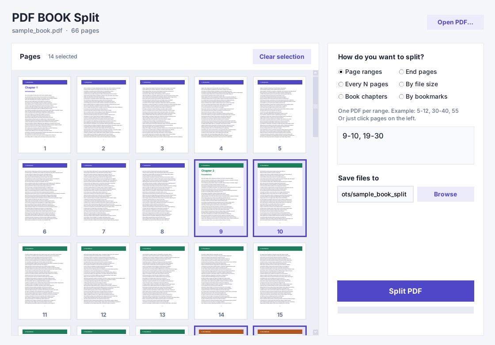
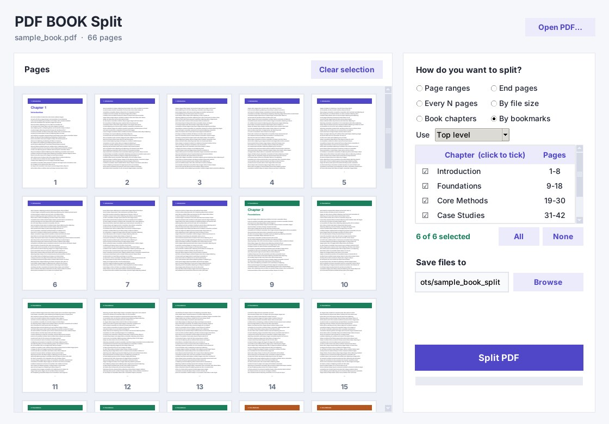
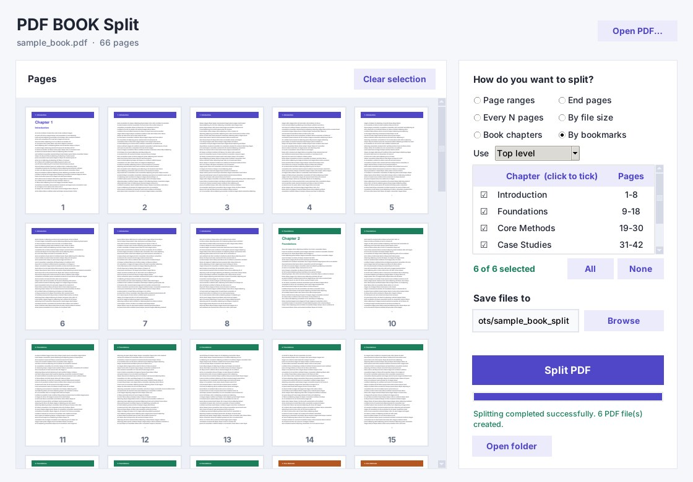

قسّم كتاب PDF إلى فصول.
حتى لو لم تكن فيه bookmarks.
الصق فهرس الكتاب، وحدّد رقم صفحة بداية الكتاب في ملف PDF، واحصل على ملف مستقل لكل فصل. كل شيء يعمل على جهازك بدون إنترنت.
احصل على البرنامج المميزات
ست طرق للتقسيم
فصول الكتاب
الصق الفهرس المطبوع وحدّد رقم صفحة PDF التي تقابل الصفحة 1 من الكتاب. يحوّل البرنامج أرقام الصفحات تلقائياً.
حسب bookmarks
يقرأ فهرس الملف الداخلي، فتختار الفصول المطلوبة فقط.
نطاقات الصفحات
اكتب نطاقات مثل 5-12 و30-40، أو اضغط على صور الصفحات لتعبئتها.
صفحات النهاية
اكتب آخر صفحة في كل جزء فقط.
كل N صفحة
قسّم الملف إلى أجزاء متساوية.
حسب الحجم
حدّد أقصى حجم بالميجابايت لكل ملف.
مصمم للكتب الحقيقية
سريع وخفيف
جُرّب على كتاب من 1000 صفحة وحجمه 218 ميجابايت: فُتح في أقل من ثانية وقُسّم إلى 5 ملفات في نحو ثانية.
يحافظ على bookmarks
تُنسخ إلى كل ملف ناتج، وتُسمّى الملفات مثل "01 اسم الفصل.pdf".
يدعم العربية
يقبل الأرقام الهندية والفارسية في كل مكان، فيمكنك لصق فهرس كتاب عربي كما هو.
خصوصية كاملة
لا رفع ولا حساب ولا سحابة. كتبك تبقى على جهازك.
سحب وإفلات
اسحب الملف إلى النافذة، وعاين الصفحات، واضغط Ctrl+Enter للتقسيم.
شاهده وهو يعمل



سعر واحد. ملكك للأبد.
سعر الإطلاق لفترة محدودة. ترخيص واحد لويندوز، بدون اشتراك.
اشترِ الآنأسئلة شائعة
هل يحتاج الملف إلى bookmarks؟
لا. وضع bookmarks يستخدمها، لكن وضع فصول الكتاب يعمل من الفهرس الذي تلصقه، فيصلح للكتب الممسوحة أو المحمّلة بدون bookmarks.
هل تُرفع ملفاتي إلى الإنترنت؟
لا. التقسيم يتم بالكامل على جهازك.
هل يقرأ صفحة الفهرس تلقائياً؟
ليس حالياً. تلصق نص الفهرس بنفسك، وهي الطريقة الموثوقة للكتب التي لا يمكن استخراج نصها، وهذا شائع في ملفات PDF العربية.
هل يظهر تحذير من ويندوز؟
البرنامج غير موقّع رقمياً بعد، فقد يعرض ويندوز رسالة "Windows protected your PC". اختر "More info" ثم "Run anyway".
ما إصدارات ويندوز المدعومة؟
ويندوز 10 و11 بنظام 64 بت.
أدلة
كيف تقسّم كتاب PDF إلى فصول
الخطوات مع مثال على فرق الترقيم بين الكتاب وملف PDF.
Split a PDF without bookmarks
The English guide.